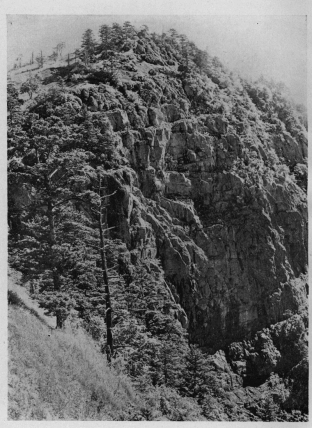

| 山の魅力 | |
| 木暮 理太郎 | |
| (2015) | |
山の魅力
木暮理太郎
夏の登山が今日のように盛
になったのは、色々の原因があるにしても、山が何かしらん人の心をしっかりと捉えずには置かない、強い魅力を持っている為である。人真似であろうが流行かぶれであろうが、登山の動機は何であっても、二度三度と行く中
には、真実に山が好きになって、機会さえあれば如何しても登らないではいられないようになる。平地では夢想だもしなかった、登山者の前にのみ次から次へと展開する新しい驚異は、知らず知らずの間に山にあこがれ、山に徹底し、これと融合して無我の境地に到達しなければ止まない衝動を与える。この境地は登山に於て所謂
詩人の霊感にも比す可
きものであろう。されば山の魅力は驚異であり、驚異の感情は登山者が山に執着を感ずる心の目覚めである。つまるところこれは、如何に多くの人が原始のままの自然の姿に対して、無意識の中に深い憧れを感じつつあるかを語るものに外ならない。そして自然が最もよく原始のままに保存されているのは、陸上に於ける島ともいう可き山である。山が高ければ高い程、深ければ深い程、一層よい。
勿論山に登るのは、それがいくら容易な山であるというても、平地を歩くより骨の折れることは言う迄もないことで、幾多の困難があり、時としては多少の危険がある。この困難を排し、この危険を冒して、或時は恐怖の念と戦い之
を克服しつつ、或時は驚異におどり立つ心に胸の高鳴りを感じつつ、自ら努力して撓
まざる登高の歩みを続けなければならない、潑溂たる精神の向上と肉体の健闘とを強いられることも、登山の快味を高調する点に於て、亦
山の持つ魅力の一に加えることを許さる可きであろうと思う。特別の場合はあるにしても、登山の最大の愉快は、首尾よく目的の登攀を完了して、山稜にもあれ山頂にもあれ、其処
から四周の眺望を恣
にする時にあるが、それはこの努力に対して山が与えてくれる貴い報酬である。
山は暑さ寒さの変化が激しい。日中でも陽がかげると急に寒くなる。まして夕方から朝にかけては、夏でも三月頃の気候に等しいので、薄霜の結ぶことさえある。殊に風雨氷雪の荒れ狂うに任せている高山の上では、木でも草でも平地のようにのんびりとは育たないで、皆曲りくねってひねこびているが、はち切れる程に力が溢れている。一目見た丈
で平地とは全く異なった別世界に来たことが分る。それに平地では勿論低い山では到底見ることの出来ない幾多の特色がある。其
中に二、三を言えば、残雪や岩石に綾
なされた美しい草原を飾る艶麗なお花畑、過去の氷河の遺跡であるといわれている半円形の窪地（カール即ち圏谷）をぎっしりと埋めている万年雪の輝き、雲の海の壮観、御来迎
の奇現象などは、まず高山に限られた特色の著しいものである。
お花畑というのは、各種の高山植物の花が紅白黄紫入り乱れて咲いていることも絶無とはいえないが、概して一群の中で、或種の花が多数を占めて、其
群を支配している場合が多い。例えば見渡す限り白い花の白山一華
に交って、紅い小岩鏡
や、紫の虫取菫
などが点在しているといった工合である。しかし少しも外のものが混らないで、純群落を作っていることも亦
少なくない。紅い駒草
や白山小桜
、濃い紫の千島桔梗
、白い岩梅などがそれである。いつか盛岡市の西北にある岩手山に登った時、頂上の旧火口の内部に駒草の大群落が咲き続いているのを見て、全く驚いたことを覚えている。朝日岳の頂上附近にある白馬アサツキの群落も、他には見られぬ特色という可
きであろう。可憐な白山小桜は北アルプスや奥上州方面の山に多い、稍
多量に水気を含んだ湿地であれば、必ず白山小桜と毛氈苔
の群落が見られる。緑の偃松
を綴って高根薔薇
の紅い花が、万緑叢中の紅一点どころか千点といいたい程に咲いているのは、むしろ稀にしか見られない眺めである。北アルプスの雪倉岳がそうであった。五月雪消の跡に葉に先立って大きな白い苞
を持った水芭蕉の花が、地から湧き出したもののように原を埋めて一斉に咲いた時の尾瀬は、目を驚かすに足るものがある。南アルプスでは白い花の白馬黄耆
や紫の深山小田巻草
が多い。それが断崖の縁をくけたように咲き続いて、吹き上る谷風に揺れている風情も捨て難い趣がある。然
し何といっても私はまだ立山の南に在る五色ヶ原ほど、変化に富んだお花畑を見たことはない。其処
は八千尺を超えた高原で、偃松があり、草原があり、石原があり、残雪もあり、池もあり、渓流もあるというように、有らゆる条件を具
えているので、湿地を好む植物と乾燥地に生ずる植物とが、一団又
一団と群落を成して、其名の如く目が醒めるような一の大きなお花畑を作っている。天上の楽園とはげに斯様
な処をいうのであろうとつくづく感心したのであった。其他の多くの山にも、それぞれ特長あるお花畑の存在することは言う迄もないが、一々紹介する余裕のないのを遺憾に思う。
圏谷も高山の特色の一で、二千五、六百米前後の高さの処に、丁度杯などを二つに割ったような半円形をなして、岩だらけな山肌に喰い込んでいる窪地に与えられた名である、南アルプスにも北アルプスにも有るけれども其
数は北アルプスの方が多い。今は大抵其中に万年雪がつまっているが、幾千年乃至
幾万年の遠い過去には、小さな氷河が懸っていたのだといわれている。これがあると山が如何にも高山相を呈して立派に見える。北アルプスの黒岳や薬師岳や立山などが、槍ヶ岳や穂高岳よりも標高が低いにも拘
らず、崇高で威厳ある姿を見せているのは、実に山の東側に多量の万年雪を蔵した大きな圏谷を四つも懸け連ねていることに原因するものと思うのである。針ノ木峠を初めて登った人が頂上に立って立山の東面を望み、其偉観に驚嘆の目を見張るのもこの圏谷ある為に外ならないのである。
雪の多い北アルプスでは、圏谷の万年雪から皆長い雪渓が走り下って、二十町以上に達するものさえある。遠くから眺めると恰
も白竜の昇天するようでもあり、銀の延べ板を懸け列
べたようでもある。この壮観を麓の森林の青葉越しに仰ぎ見た瞬間には、思わず心も体もすうと其方に引き寄せられる。雪渓は邪魔になる木や石がなく、歩き易いので登路に選ばれることが多い。雪の消えた両側の斜面には、春を待ちかねていた各種の高山植物が咲き乱れたり、角
ぐむ草の芽立ちがほの紅く匂ったりして、登山者の目を楽しませ、近くの岳樺
や深山榛
の矮
い林の中では、鶯、駒鳥、大瑠璃
其他の小鳥が囀り交わして、快い響を漂わしている。谷の空からは時折時鳥
の声が聞える。熊の多い北アルプスでは純白な圏谷の雪の上を大きな真黒な熊がのそりのそり歩いていることなどもあり、鹿の多い南アルプスでは、むら消えの雪間に生えた軟い芳草に飽きて、木蔭に甘睡の夢を貪っている鹿の群を驚かすことなどがある。惜しいことに南アルプスは北アルプスほど降雪に恵まれていないので、夏の残雪には殆ど見るに足るものがない。
雲の海の壮観は、また一度山に登って之
を見た人の永く忘れることの出来ないものの一であらねばならない。殊にそれが晴れた日の朝や夕方に多いので、雄大な眺望と相待
って一層強く印象される。朝早く起きて寒さをこらえつつ頂上に立って見渡すと、下界は一面に白い雲が平に立ち罩
めて、綿を敷き詰めたようである。其上に八千尺以上の高山の頂きのみが孤立したり連続したりして、黒く抜け出している様は、まるで荒波の砕けている海上の島を見るようであるが、また銀のお盆の上に黒い石を並べた盆石に譬
えられないこともない。眤
と見ていると何だか其雲の上が歩いて渡れそうな気がして来る。普通二千乃至
二千四百米以上の高山に見られる現象であるが、千八百米足らずの三峠
山や、千四百米前後の榛名山又
は荒船山などでも見たことがある。しかし高山の上で見る方が壮観である。この雲の海もやがて太陽が上って空気が動揺して来ると、次第に運動を起して千変万化の景色が織り出される。夕方など焚火にあたりながら、はて知らぬ雲の海のあなた日本海と想うあたりに、紅玉のような太陽が静
に沈み行く様を見ていると、偉大なるだんまりの一幕を見ているような気のすることが幾度かあった。暴風雨の前後に現われる雲の海は、表面が大濤
のように荒れ狂って、非常に物凄い。それが落日の光に赤く焼けて、炎々と燃え立つ時などは全く凄美の極みである。

●三峠山の屛風岩
御来迎
は日の出と縁がない訳でもないが、日の出そのものを指して言うのではない。日の出よりも反
て日の入る時に起る場合の方が多いかも知れない位だ。つまり日出後一時間或は日没前一時間位の間に、太陽と反対の方向に雲か霧が活動写真の映写幕のように工合よく拡がると、それへ美しい真円な虹が現れ、虹の中に物の影が映るのであるから、高い山の頂上か又は尾根の上に立って居る時でなければ見られない。虹の大
さは目分量であるから人に依って考
が同じでない。勿論地平線上に於ける太陽の位置の高低によって、この虹の直径は実際に大さを変化するのであろう。けれども私にはいつも直径三尺位にしか想えなかった。自分が動くと物の影も動くので、自分の姿が映ったものと直
ぐ判断される。三人居れば三人とも姿は映るが、面白いことには誰の目にも自分だけがいつも虹の中央に居るように見えることである。昔の人は自分の影が映っているとは夢にも知らなかったであろうから、稀に之を見た者は仏様が出現したものと信じて、随喜の涙を流したものと思われる。然
しこの現象は昔も今もそう度々
は見られないものらしい。私も四十年来山登りを続けているが、僅
に朝二度夕方三度と合せて五度しか見たことはないのである。
（昭和九、七『蠟人形』）
底本：「山の憶い出 下」平凡社ライブラリー、平凡社
１９９９（平成11
）年7
月15
日初版第1
刷
底本の親本：「山の憶ひ出 下巻」龍星閣
１９４１（昭和16
）年8
月20
日再刷
初出：「蠟人形」
１９３４（昭和9
）年7
月
※底本は、物を数える際や地名などに用いる「ヶ」（区点番号5-86）を、大振りにつくっています。
※写真は、底本の親本からとりました。
入力：栗原晶子
校正：雪森
２０１５年5
月24
日作成
青空文庫作成ファイル：
このファイルは、インターネットの図書館、青空文庫（http://www.aozora.gr.jp/）で作られました。入力、校正、制作にあたったのは、ボランティアの皆さんです。